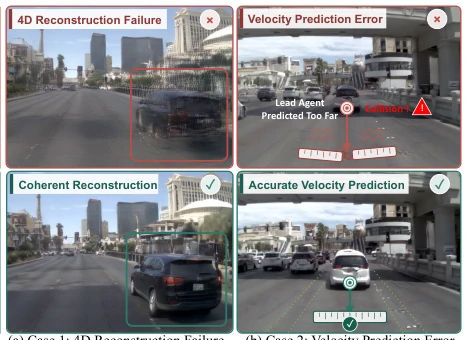

现有 WAMs (如 DriveVLA-W0 [Li et al. 2025], Epona [Zhang et al. 2025]) 依赖 2D 视频监督，导致预测虽视觉合理但几何失真。Wu et al. [2025] 指出世界模型难以理解 4D 结构，引发重建失败或速度预测错误，误导下游规划。单纯扩数据无法解决此物理不一致问题。本文旨在通过几何监督强制模型学习 4D 场景演化，确保预测帧符合物理规律，从而提升规划安全性。
—

Figure 1: Existing WAMs, trained with 2D video supervi- sion, fail to capture the structure of underlying 4D driving scenes. This leads to two critical failure modes in complex driving scenarios. (a) 4D Reconstruction Failure. Highly dynamic objects exhibit visual artifacts and geometric de- formation. (b) Velocity Prediction Error. Lacking reliable distance perception, WAMs fail to predict the lead agent’s velocity, resulting in a collision. Through 4D consistency su- pervision, 4D-WAM effectively addresses both failure modes and achieves 4D consistent world modeling.
Figure 2: Overview of 4D-WAM. The MoT-based backbone (left) jointly predicts future video frames and the ego trajectory, with decision-oriented timestep sampling applied during training. A frozen geometric foundation model (top right) extracts 4D features and dense depth from both predicted and ground-truth future frames, providing 4D consistency supervision to the backbone through feature- and depth-consistency losses. The asymmetric attention mask (bottom right) prevents condition tokens from attending to future video and action tokens while enabling bidirectional video–action interaction.
Figure 4: Effect of 4D consistency supervision. We compare 4D-WAM without 4D supervision (top), the full model (middle), and ground truth (bottom). 4D consistency supervision improves the model’s understanding of 4D scenes, enabling more coherent predictions of dynamic vehicles. It also enhances distance perception ability and avoids collision.